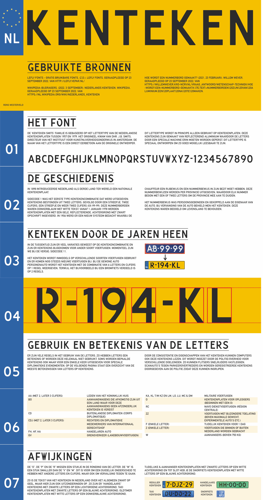

Bij het vak typografie waren er 2 opdrachten. We zijn begonnen met het verzamelen van inspiratie van fonts die we op straat in het dagelijks leven tegen kwamen. Hier moesten wij er 1 van kiezen waar wij verder onderzoek naar wilden doen. Vervolgens heb ik een bijpassende poster gemaakt zoals te zien bij “Four lttr word” en een informatief boekje over het font.
Four lttr word
Dit is de poster die ik heb gemaakt bij het gekozen font: kenteken. Ik vond het hier toepasselijk om de poster in de enige stijl te maken waar het font voor woord gebruikt en dat zijn kenteken platen. Ik heb hier een abstractere versie van gemaakt door de 2 herkenbare kleuren blauw en geel te combineren en deze versterkt door alleen een blauwe balk te gebruiker zoals op een echt kentekenplaat. Het woord heb ik in de strakke letters van het font gemaakt en deze van elkaar gescheiden met een “-” zoals ze dat bij een kenteken ook doen.
Boekje over typografie
Dit is het informatieve boekje over het kenteken font. Toepasselijk heb ik hier ook weer mijn inspiratie uit het kenteken gehaald. Ik heb de verhoudingen van het echte kenteken gepakt en hier informatie over het font verteld. Zo lees je over de geschiedenis, gebruik en speciale gebruiken van het kenteken.
